Exámenes. FengOffice
NOTA:
FengOffice 1 - Descargar FengOffice
- Fengoffice es un sistema de gestión de proyectos y trabajo en equipo.
Aplicación: FengOffice 2.6 (16/05/14). Página web: Fengoffice
- Descomprimir FengOffice en la carpeta fengoffice.
FengOffice 2 - Instalar FengOffice
En este apartado se trata de poner en marcha FengOffice:
- Crear con phpMyAdmin un usuario de MySQL con nombre iwb_fengoffice_1, contraseña iwb_fengoffice_1 y base de datos iwb_fengoffice_1.
- Ejecutar desde Eclipse el archivo fengoffice/index.php.
- Rellenar la información necesario para instalar FengOffice. Por ejemplo:
- Datos del usuario administrador:
- nombre: admin
- dirección de correo: admin@example.org
- contraseña: admin
- Nombre de la empresa: WebApps
- Entrar como administrador y hacer una captura del sitio:
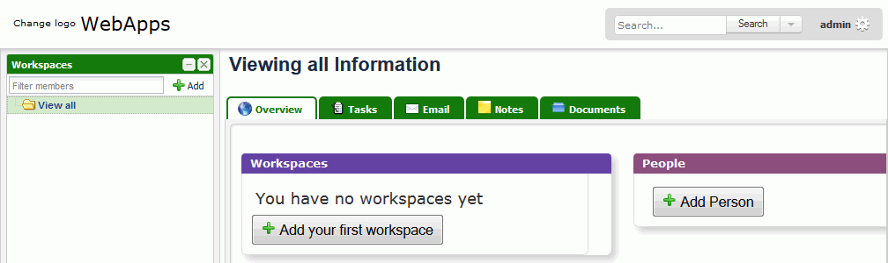
FengOffice 3 - Personalizar
- Cambiar el idioma a Español y hacer una captura del sitio:
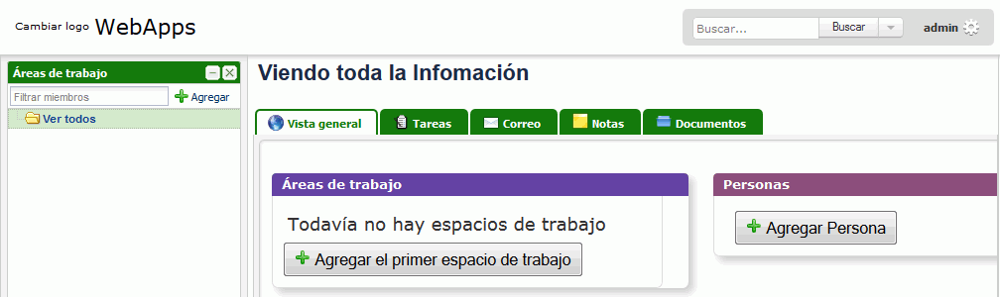
- Añadir el logotipo grande al sitio y hacer una captura del sitio:
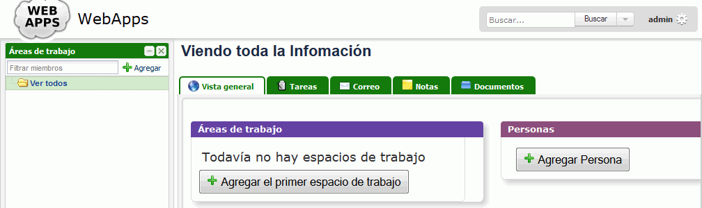
- Cambiar al logotipo pequeño y hacer una captura del sitio:
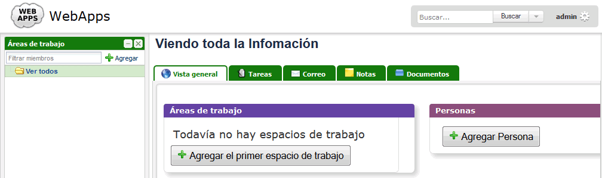
- Asignar una imagen al administrador y hacer una captura del sitio:

FengOffice 4 - Usuarios y áreas de trabajo
- Crear el siguiente usuario de tipo Gerente (que la contraseña coincida con su nombre de usuario) y hacer una captura:
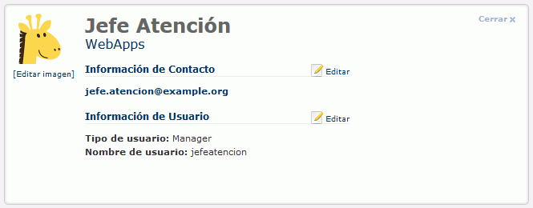
- Comprobar que se puede entrar como usuario jefeatencion y hacer una captura
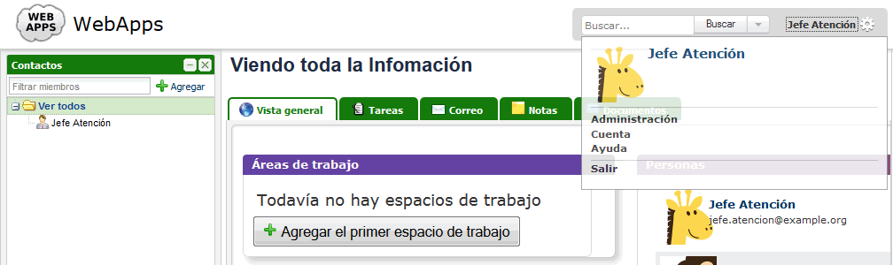
- Crear el siguiente usuario de tipo Ejecutivo (que la contraseña coincida con su nombre de usuario) y hacer una captura:
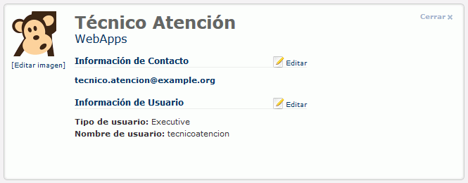
- Crear un área de trabajo llamada WebApps:
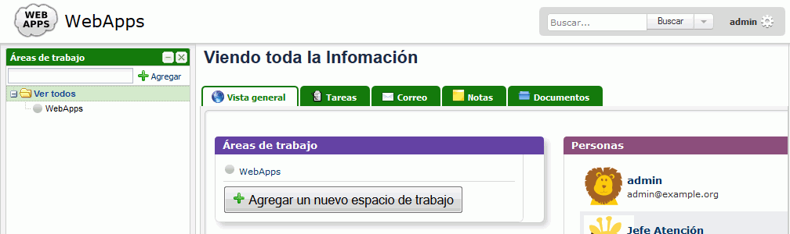
FengOffice 5 - Tareas y notas
- Como usuario jefeatencion, abrir una tarea y asignarsela al usuario tecnicoatencion y hacer una captura:
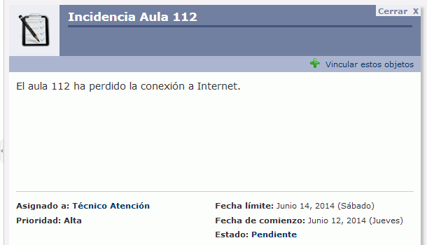
- Como usuario tecnicoatencion, comentar la tarea y completarla y hacer una captura:
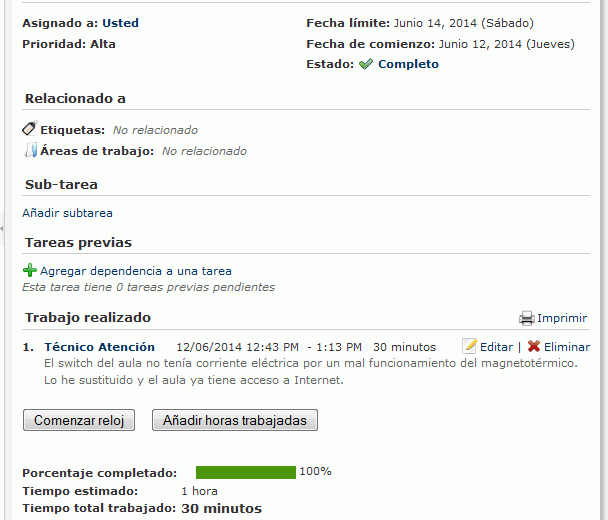
- Como usuario tecnicoatencion, crear una Nota relacionada con la incidencia anterior y hacer una captura:
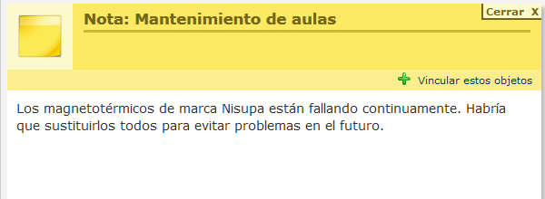
FengOffice 6 - Enlaces web
- Crear un par de enlaces web disponibles para todos los usuarios y hacer una captura:
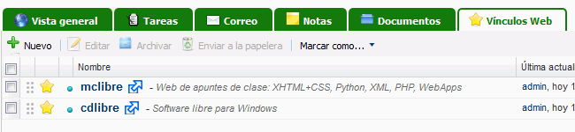
FengOffice 7 - Alias
- Configurar el servidor de manera que se pueda acceder a fengoffice escribiendo la dirección http://localhost/fengoffice/
- Hacer un captura del archivo de configuración del servidor en el que se vean las líneas añadidas.
FengOffice 8 - Copias de seguridad
- Realizar una copia de seguridad manual completa de la instalación (ficheros y datos).